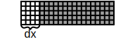
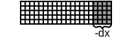
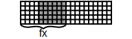

Klonowanie repo:
git clone https://github.com/CFD-GO/TCLB.git
cd TCLBInstalacja dodatkowych pakierów R:
tools/install.sh rdep
tools/install.sh rinsideKonfiguracja - tu wybieramy opcje kompilacji:
make configure
./configureKompilacja — tu wybieramy model:
make -j 8 d2q9Uruchomienie — tu wybieramy case do uruchomienia:
CLB/d2q9/main example/flow/2d/karman.xml./configure--enable-graphics Włączenie okna podglądu--disable-double Przełączenie na pojedyńczą precyzję--disable-cuda Kompilacja na CPU--with-nlopt Kompilacja z biblioteką do optymalizacji nlOpt.--with-python Kompilacja z integracją z Python’em--with-r Kompilacja z integracją z R’emXML to format danych o zagnieżdzającej się struktórze. Element w pliku zaczynamy tagiem <Nazwa argument="wartosc"> a kończymy tagiem </Nazwa>. Jeśli chcemy stworzyć element i odrazu go zakończyć (nic do środka nie włożyć) to piszemy <Nazwa argument="wartosc"/>.
Fields to pola, które rozwiązywane są przez model. Definiujemy je za pomocą:
AddField(name="A", dx=c(-1,1),dy=c(0,0)) gdzie dx, dy, dz wskazują w jakich zakresach sąsiednich komórek możliwy jest odczyt pola. W Dynamics.c mamy do nich dostęp przy pomocy wywołania A(-1,0).
Density to akcesory do pól — predefiniowane kierunki z których zostają czytane/stream’owane pola.
AddDensity(name="B", field="A", dx=-1,dy=0) definiuje zmienna B do której zostanie wczytane pole A z sąsiada o współrzędnych dx, dy i dz. Gdy argument field zostanie pominięty, odpowiednie pole o tej samej nazwie zostanie utworzone.
Quantity to pola eksportowane. W LBM są to zazwyczaj pola makroskopowe takie jak prędkość czy ciśnienie.
AddQuantity(name="C",unit="m/s",vector=TRUE) definiuje pole C. Pola te mogą być wektorowe (zawsze 3D) i mogą posiadać jednostkę. Są to pola zapisywane do plików vti przy pomocy elementu <VTK \>.
Setting to ustawienia, które przekazywane są do dynamiki węzła.
AddSetting(name="Velocity",default=0,zonal=TRUE) definiuje ustawienie “Velocity”. Domyślnie ustawienia są globalne dla całej siatki, jednak ustawienia typu zonal mogą być ustawiane oddzielnie dla wybranych stref siatki, jak i mogą być kontrolowane w czasie.
Global to całki/sumy po siatce. Służą do obliczenia globalnych funkcji takich jak strumień, dysypacja, siła nośna, etc.
AddGlobal(name="Flux",unit="m/s") definiuje całkę o nazwie Flux. Każdy element może dać swoją kontrybucję do tej całki za pomocą AddToFlux(74). Całki te mogą być eksportowane do plik typu csv przy pomocy elementu <Log \>.
NodeType to typy elementów siatki. Typy elementów podzielone są na grupy. Element może posiadać wiele typów, ale tylko po jednym z każdej grupy.
AddNodeType(name="CrazyInlet", group="BOUNDARY") dodaje typ CrazyInlet do grupy BOUNDARY. Typowe grupy w LBM to BOUNDARY i COLLISION.
<CLBConfig output="output/">...</CLBConfig> obejmuje cały plik konfiguracyjny i ustawia ścierzkę dla plików wyjściowych
<Geometry nx="10" ny="10">...</Geometry> definiuje siatkę/geometrię (patrz obok).
<Model>...</Model> zazwyczaj obejmuje wszystkie ustawienia przypadku. po zakończeniu tego elementu następuje inicjalizacja siatki.
<Params Viscosity="0.01"/> przypisuje wartości ustawieniom.
<Params Viscosity-Strefa="0.01"/> przypisuje wartości ustawieniu typu zonal w konkretnej strefie.
<VTK Iterations="100" what="U,P"/> eksportuje wyniki do formatu vti czytanego przez ParaView co 100 iteracji. Argument what pozwala wybrać jakie pola zostaną zapisane.
<Log Iterations="10"/> zapisuje do pliku csv wartości całek i ustawień co 10 iteracji.
<Solve Iterations="10000"/> wykonuje 10000 iteracji.
<Units>
<Params Velocity="1m/s" gauge="0.1"/>
<Params Viscosity="0.01m2/s" gauge="0.01"/>
</Units>Ustala jednostki, tak by wartości mianowane zgadzały się z niemianowanymi (gauge). W tym wypadku \(1\frac{m}{s} = 0.1\) i \(0.01\frac{m^2}{s}=0.01\), co daje: jeden metr to 10 elementów, a jedna sekunda to 100 iteracji.
<Control Iterations="1000">
<CSV file="file.csv" Time="x*1000">
<Params Velocity="y*0.02+0.05"/>
</CSV>
</Control>Przypisuje zmienne w czasie sterowanie dla ustawienia Velocity wczytanego z pliku file.csv. Kolumna x z pliku zostanie przeliczona na czas, zaś kolumna y na wartości.
O definiowaniu geometrii można myśleć jako o zamalowywaniu obszarów. Każdy element geometrii składa się z definicji “czym malujemy” i “gdzie malujemy”:
<Wall mask="ALL" name="Sciana">
<Box dx="5" nx="1" ny="30"/>
</Wall>Elementem typu Wall zostanie zamalowany obszar prostopadłościanu (Box). Argument mask="ALL" mówi nam, że wszystkie typy (także z innych grup) węzłów zostaną nadpisane (m.in. zostanie wyłączona kolizja). Argument name="Sciana" przypisuje temu obszarowi nazwę strefy (będzie w niej można przypisać ustawienia typu zonal).
Elementów definiujących “gdzie malujemy”, może być wiele następujących po sobie. Ich wielkość zazwyczaj definiujemy za pomocą argumentów dx, nx, fx i analogicznych dla y i z. Domyślnie każdy element zajmuje całą geometrię, lecz można ją zminiejszyć tymi ustawieniami:
 <Box dx="4"/>
 <Box dx="-4"/>
<Box dx="4" nx="10"/>
 <Box dx="4" fx="10"/>
Typowe elementy geometryczne to: <Box .../> - Prostopadłościan, <Sphere .../> - Kula, <Wedge ... direction="LowerRight"/> - Klin (trójkąt prostokątny). Dodatkowo ważne elementy to:
<Text file="file.txt"/> wczytuje kształt z tekstowego pliku z zerami i jedynkami.
<STL file="file.stl"/> wczytuje geometrie z pliku stl. Skale i pozycje można ustalać za pomocą argumentów scale="0.2" x="0.1" y="0.3" z="0.2" Xrot="90d". Dodatkowo, można ustalić czy zostanie zamalowane wnętrze ( side="in"), zewnętrze (side="out") czy powieszchnia (side="surface" - głownie istotne dla warunków interpolowanych).